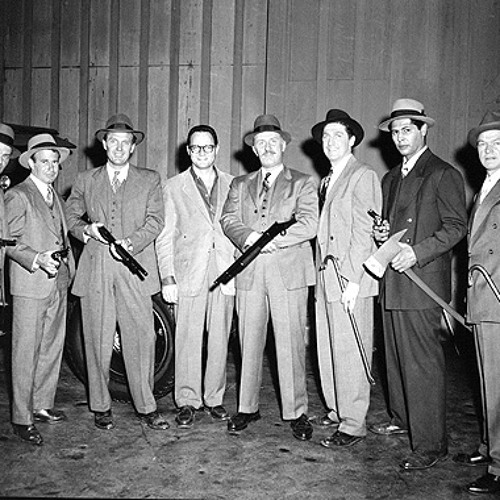
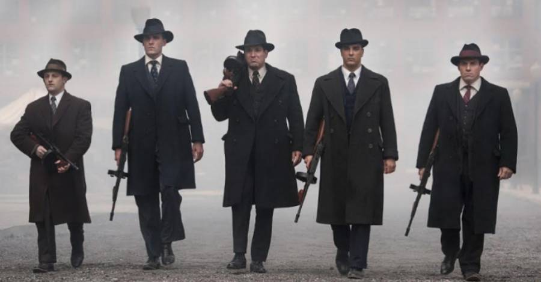
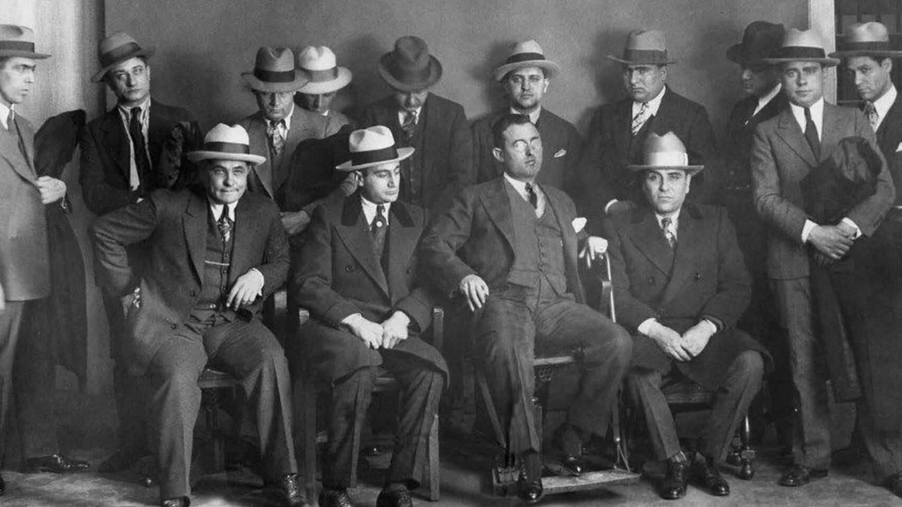
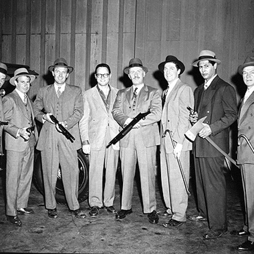
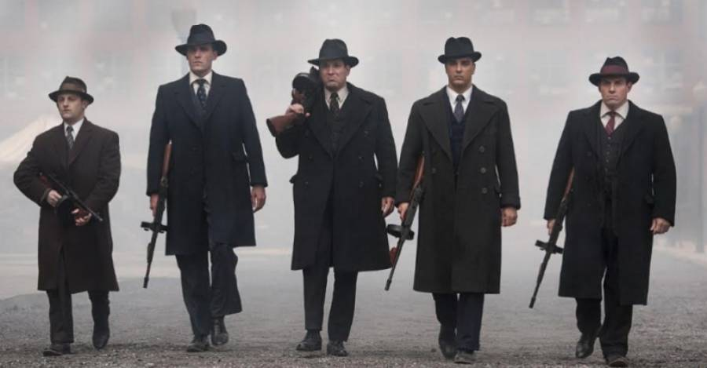
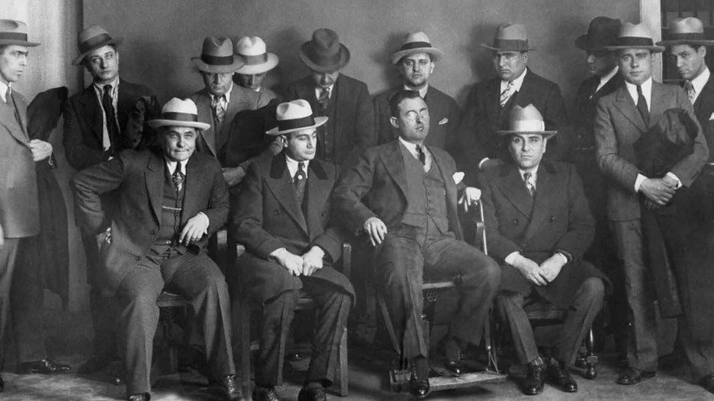

Primeras menciones
De acuerdo con algunas versiones, su primera mención aparece en un texto italiano del siglo XVIII contra la brujería, donde se la asociaba a las ideas de ambición y arrogancia. Otros etimólogos aseguran que es un vestigio del dominio árabe en Sicilia en el siglo IX, pues en esa lengua el vocablo mohios significa ‘hombre rudo y agresivo’. Otros aseguran que 'mafia' es el acrónimo de la frase Mazzini Autorizza Furti, Incendi, Avvelenamenti (‘Mazzini autoriza robos, incendios y envenenamientos’), en referencia a Giuseppe Mazzini, promotor de la unidad italiana. La mafia se habría iniciado como tal, según Heckethorn,5 a partir de una asociación de indigentes sicilianos que, bajo la tutela de Mazzini, comenzaron a organizarse y a realizar actividades criminales bajo la protección de la flota británica.
Estructura de la mafia en Italia
Don (jefe de la familia)
Sottocapo (subjefe, sustituye al Don en caso de que esté incapacitado)
Consigliere (consejero del Don, lo asesora en decisiones importantes)
Caporegime (el superior al Capodecime)
Capodecime (dirige a una decena de hombres)
Soldato (los sicarios)
Associati (los aspirantes a Soldato, que aún no han sido admitidos en la familia)
Mafia principales
En Italia hay cuatro mafias principales:
La Cosa Nostra (Sicilia).
La 'Ndrangheta (Calabria).
La Sacra Corona Unita (Apulia).